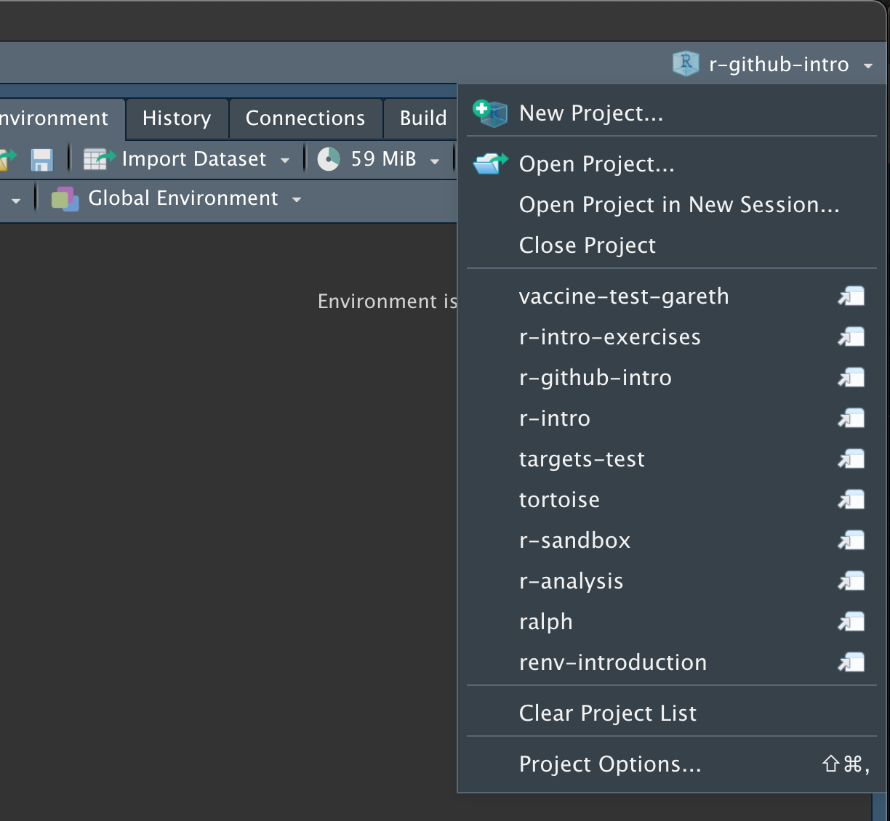

Git and GitHub
Introduction
What is Git?
Why write a definition when you can simply lift one from Wikipedia1?
Git is software for tracking changes in any set of files, usually used for coordinating work among programmers collaboratively developing source code during software development. Its goals include speed, data integrity, and support for distributed, non-linear workflows (thousands of parallel branches running on different systems).
In simple terms: software is simply a collection of text files with lines of code in them, and adding to a software project essentially amounts to adding and removing different lines of code. Git provides a way to track these modifications, and to bring together multiple sets of modifications from different developers: even when they have all (unbeknownst to them) been working on the same lines of code.
It is most useful when working with others, but Git is also useful when working solo, since each modification can essentially be considered a snapshot of the project’s progress, and this can be restored with ease.
What is GitHub?
Git and GitHub are not the same thing! This cannot be overstated.
If you’re going to be working on a software project, using Git, with other developers, you need somewhere to store the “official” version of your code: to which individual developers will make changes as and when features are added.
A bewildering number of developers use GitHub for this purpose; the purpose being to act as a remote repository on which to store code.
Alternatives (such as GitLab and Bitbucket), but they are nowhere near as widely used as GitHub.
Basic Git commands
Git is an extremely powerful, and at times dangerously confusing tool, but you can get surprisingly far with very few commands.
This is a far from comprehensive list of Git commands. See Further Reading for more thorough guides
In order to learn about them, you first need a repository to work with. In order to do this, you’re going to fork (basically create a copy) of one I created earlier:
You should now see a copy of this repository on your GitHub account. The next task is to download a copy to work on on your machine. For that, we need git clone.
git clone
If you open your repository, you should see a green Code button:

Click on this to get your url:

It should look something like git@github.com:some-username/r-intro-exercises.git or https://github.com/some-username/r-intro-exercises.git
Copy this, and go to the terminal / command line on your machine, and run the following:
git clone PASTE_YOUR_URL_HEREYou should see something like the following:
Cloning into 'r-intro-exercises'...
remote: Enumerating objects: 16, done.
remote: Counting objects: 100% (16/16), done.
remote: Compressing objects: 100% (10/10), done.
remote: Total 16 (delta 0), reused 16 (delta 0), pack-reused 0
Receiving objects: 100% (16/16), 8.14 KiB | 8.14 MiB/s, done.Then navigate to that folder by running the following in your terminal:
cd r-intro-exercisesYou are now inside a directory which is a copy of the remote repository on your GitHub. You will be making changes to the files in these directories locally and pushing them back to your remote repository once you’re happy with them.
Opening the project in RStudio
Next you’ll want to open the project in RStudio.
Fire up RStudio and click on the menu in the top right, then Open Project…

Navigate to the directory where you cloned your repository above, and select the .Rproj file within it.
If you have any issues opening this project, take a look at this help documentation from RStudio.
When you first open the project, you’ll see some output in the R console like this:
renv library out of date - automatically restoring...
The following package(s) will be updated:
# CRAN ===============================
- R6 [* -> 2.5.1]
- brio [* -> 1.1.3]
...
...
...
- waldo [* -> 0.4.0]
- withr [* -> 2.5.0]
Do you want to proceed? [y/N]: Type y and hit Enter.
Go back to your terminal / command prompt and run:
Rscript test.R --exampleThis should output something like the following:
══ Testing test-exercises_000.R ════════════════════════════════════════════════════════════
[ FAIL 3 | WARN 0 | SKIP 0 | PASS 0 ]
── Failure (test-exercises_000.R:4:3): dbl_fun works ───────────────────────────
dbl_fun(2) not equal to 4.
target is NULL, current is numeric
── Failure (test-exercises_000.R:5:3): dbl_fun works ───────────────────────────
dbl_fun(100) not equal to 200.
target is NULL, current is numeric
── Failure (test-exercises_000.R:6:3): dbl_fun works ───────────────────────────
dbl_fun(402) not equal to 804.
target is NULL, current is numeric
[ FAIL 3 | WARN 0 | SKIP 0 | PASS 0 ]Don’t worry that these are all failing at the moment: we will be fixing these problems momentarily.
git status
For a command which technically does nothing, git status is very important. It is incredibly easy to cause a lot of damage to your project by running certain commands whilst making assumptions (but not checking) what the current status of your repository is.
As a rule of thumb, try to run git status before and after any other Git operation. It could save you a lot of heartache.
You run it by running the following in your terminal / command prompt:
git statusYou should get output which looks something like this:
On branch main
Your branch is up to date with 'origin/main'.
nothing to commit, working tree cleanThis means that you haven’t done anything locally beyond that which exists in the remote repository.
Before we continue, it is worth understanding the workflow of Git, by looking at the following diagram, from the Git documentation2

You start over on the left: in your working directory, with no changes to your existing files. Then, you make changes to your files, and you save them. At this point, you have done nothing different than you would when making incremental changes to (say) a Microsoft Word document.
Probably don’t use Git to manage projects with Microsoft Word documents: they might look like it, but they are not just text files.
git add
git add is the command you use to add modified files to the Staging Area. In order for it to do anything, you first need to modify a file.
Open up exercises/exercises_000.R in RStudio in your cloned repository, and you should see the following:
#' make changes to the function below to make it double any number
dbl_fun <- function(number) {
# REMOVE THE # at the start of the line below to fix your errors
# number * 2
}In R scripts (as we will learn) adding a # at the start of a line of code comments out that line: meaning you can write anything you want and the R interpreter will ignore it.
The reason the tests were failing is that the body of the function is commented out - fix it by removing the # and saving the file.
If you run git status at this point, you’d might see something like the following:
On branch main
Your branch is up to date with 'origin/main'.
Changes not staged for commit:
(use "git add <file>..." to update what will be committed)
(use "git restore <file>..." to discard changes in working directory)
modified: exercises/exercises_000.RThis tells us that one existing file – which Git was tracking – has been modified. However, we are still at the very left hand side of the diagram above. The next step is to stage these changes. To do that, you need git add .
You can add individual files:
git add exercises/exercises_000.Ror you can add a fileglob (in this case: all files with a .R extension):
git add **/*.Ror you can add everything in the directory:
git add --all
# or
git add .Now, git status will show something like this:
On branch main
Your branch is up to date with 'origin/main'.
Changes to be committed:
(use "git restore --staged <file>..." to unstage)
modified: exercises/exercises_000.RThis output says there are changes to be committed - this is the final stage in the git workflow.
git commit
Now the changes have been staged, we are ready to commit them.
Most of the time, you will use git commit with the message flag, as follows:
git commit -m "PUT YOUR MESSAGE HERE"So, in this case, maybe you’d want to do something like:
git commit -m "uncomment body of dbl_fun function"This will product output like:
[main 3453a03] uncomment body of dbl_fun function
1 file changed, 1 insertion(+), 1 deletion(-)And running git status again shows we’re back to the first stage in the workflow, but that now we’re 1 commit ahead than the origin (i.e. remote) version of our repository. To update that, we will need git push.
On branch main
Your branch is ahead of 'origin/main' by 1 commit.
(use "git push" to publish your local commits)
nothing to commit, working tree cleangit push
Git push applies the updates from the local version of your repository to the corresponding branch of the remote repository.
If (as we are here) we are on the main branch, and (as is often the case) the shorthand name being used for our remote repository is origin, then updating the remote repository is done like so:
git push origin mainThis will produce something like:
Enumerating objects: 23, done.
Counting objects: 100% (23/23), done.
Delta compression using up to 12 threads
Compressing objects: 100% (12/12), done.
Writing objects: 100% (13/13), 148.52 KiB | 2.75 MiB/s, done.
Total 13 (delta 8), reused 0 (delta 0), pack-reused 0
remote: Resolving deltas: 100% (8/8), completed with 6 local objects.
To github.com:gtm19/r-intro-exercises.git
f510bcf..5f00bd1 main -> mainIf, on the other hand, you know the remote version of the repository is more up to date than your local version (if, say, another developer had made changes), then you need to incorporate those changes into the local version using git pull.
git pull
This command is basically the antagonist to git push:
git pull origin mainWhich will produce output like this:
From github.com:gtm19/r-intro-exercises
* branch github -> FETCH_HEAD
Already up to date.The output would be more exciting if some changes had actually been made remotely.
git branch
Usually, when adding a new feature, you would create a new branch of your repository: which allows you to add to what is already in the repo, only folding your changes back into the main branch when you’re sure they’re correct.
In order to create a new branch (in our case, to add a function which triples a number), use the following command:
git branch add-tripleThen you need to checkout your new branch:
git checkout add-tripleNow running the command git branch with nothing else shows you which branch you’re on:
git branch
# * add-triple
# mainCopy and paste the following into the exercises/exercises_000.R file, and save it:
triple_fun <- function(number) {
number * 3
}Then git add, and git commit as usual.
Now the new feature has been added, it needs to be incorporated into the main branch. git merge is the command to do this.
git merge
Using git merge, you create a new commit on an existing branch, which adds in all the new stuff from another branch.
Before you start, you need to switch back to the receiving branch (main, in this case):
git checkout main…and then merge in the feature branch…
git merge add-tripleUpdating 3453a03..d3ce0f1
Fast-forward
exercises/exercises_000.R | 4 ++++
1 file changed, 4 insertions(+)You can then delete your feature branch, since the changes have now been incorporated:
git branch -d add-triplePull Requests
In reality, often developers do not merge changes into main locally and then push them to the remote repository - since often the remote repository is the absolute version of the code, from which the app is deployed.
Instead, you would create a pull request on GitHub and ask them to review and (if they’re happy) approve your request, merging and deleting the feature branch.
For now, this is beyond the scope of this workshop.